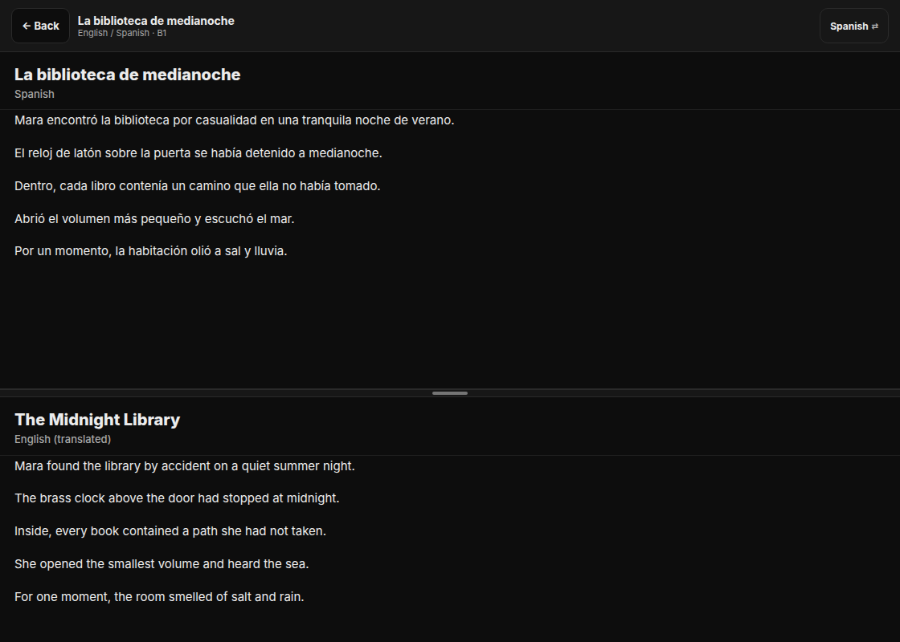
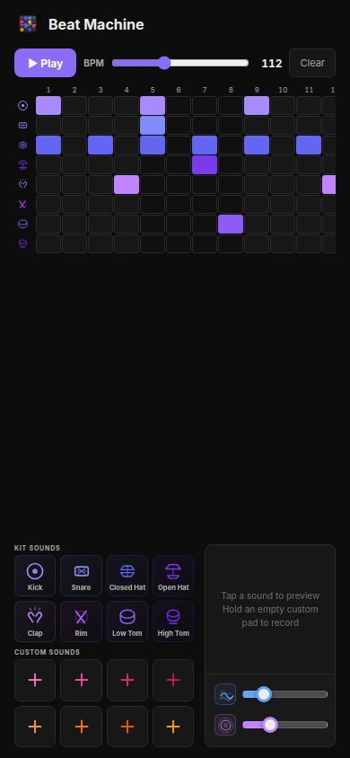
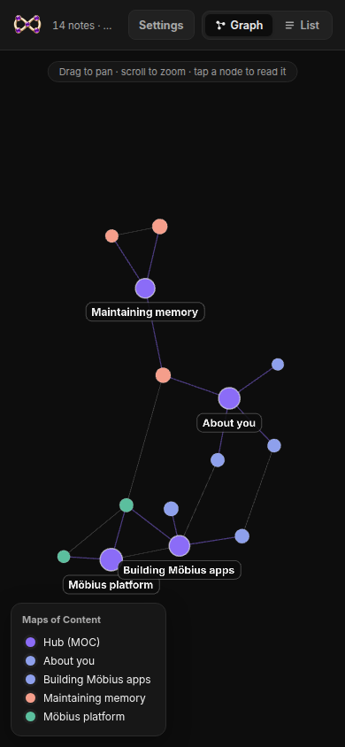
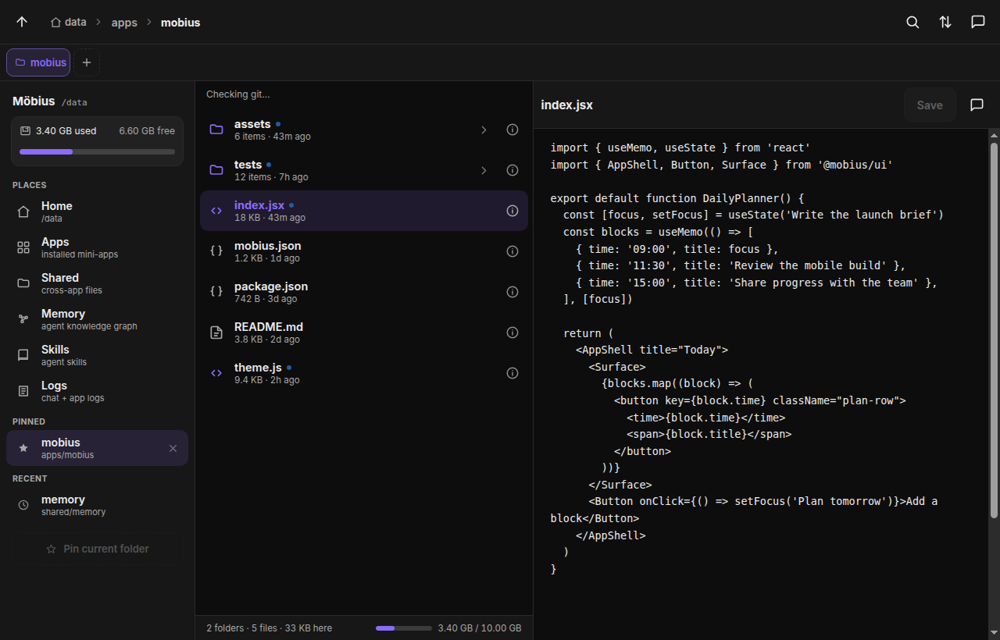
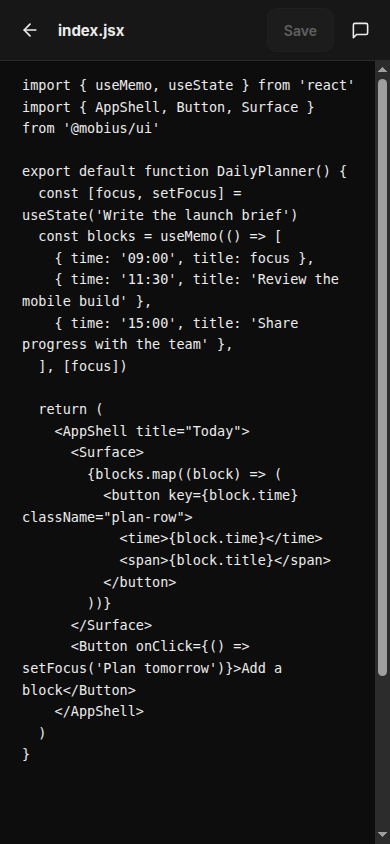
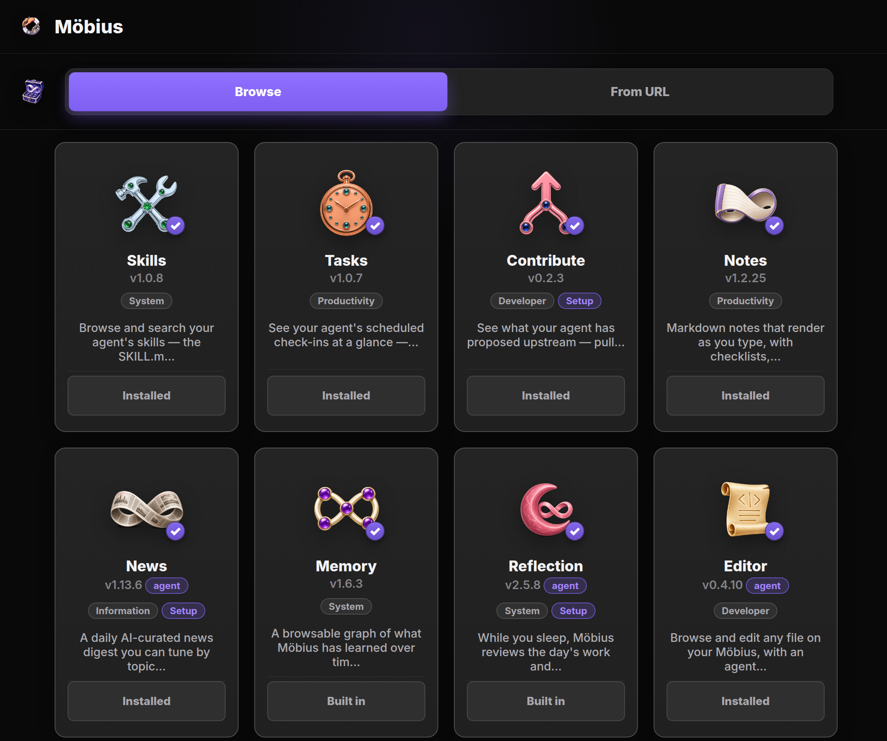
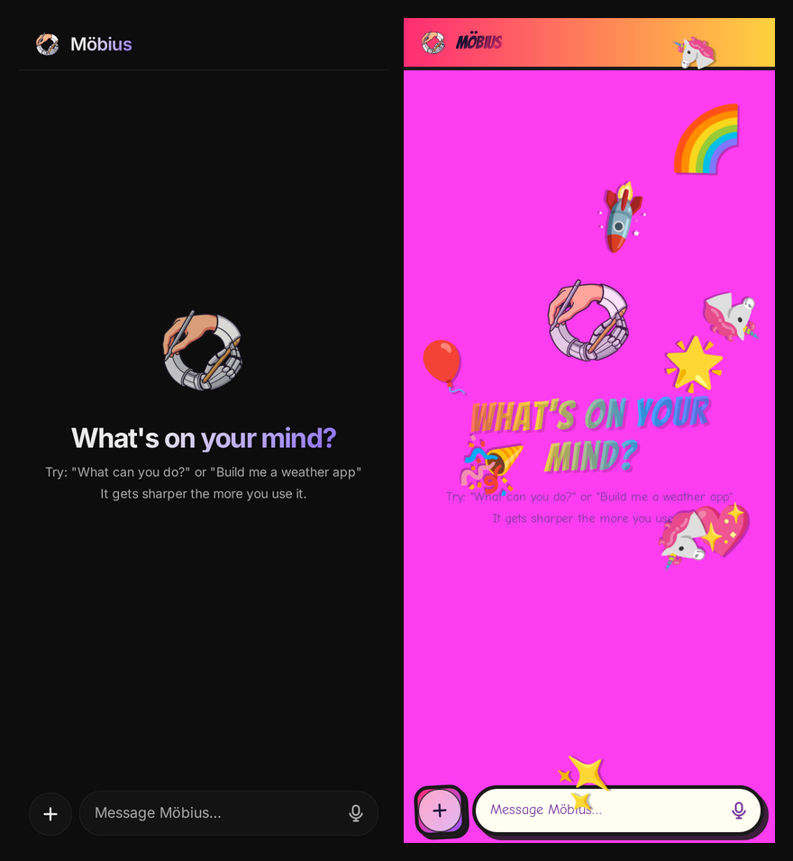

Tandem · Language learning
Read one story in two languages.
Generate a story at your level and read the original beside its translation. Tap a word when you get stuck.

Open source · self-hosted · built to change
Möbius is a personal AI workspace for building apps with an agent. Use those apps on your phone or computer, and let reflection carry useful context into the next task.
Your workspace, apps, files, and agent activity stay in the deployment you control.


Editor keeps the files behind your apps close at hand. Read and change the same project from a computer or phone, with an agent ready when you want help.


Browse app files, open the source, and check the state of the repository in one place.
Open the same code from your phone when you want to check a detail or make a small change.
Start with an app from the community. If it does not fit, change it or build the missing piece with your agent.
Tandem · Language learning
Generate a story at your level and read the original beside its translation. Tap a word when you get stuck.

Beat Machine · Music
Build a pattern on the 32-step sequencer, shape the sound, and add your own recordings. The sequencer is ready as soon as the app opens, with room to keep exploring.
App Store · Community catalog
Browse focused tools for notes, tasks, memory, news, building, and more. A useful app can become a starting point instead of another blank page.
Browse the current catalog
Themes change how the workspace looks. Memory keeps useful context available in other apps, while Reflection notices work that you should not have to repeat.

A useful platform change should not stay buried in one app. An agent can help prepare the change, then the community can review and test it before anyone else depends on it.
Solve a real problem inside your own workflow.
Identify a useful capability that should not be rebuilt every time.
Open a proposal for review, testing, and discussion.
Better primitives lead to better apps and less duplicated work.
Run Möbius in infrastructure you control.
Connect the agents and models that fit your work.

Start with one useful loop
Launch a private workspace or explore the open-source platform and community apps.